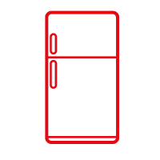
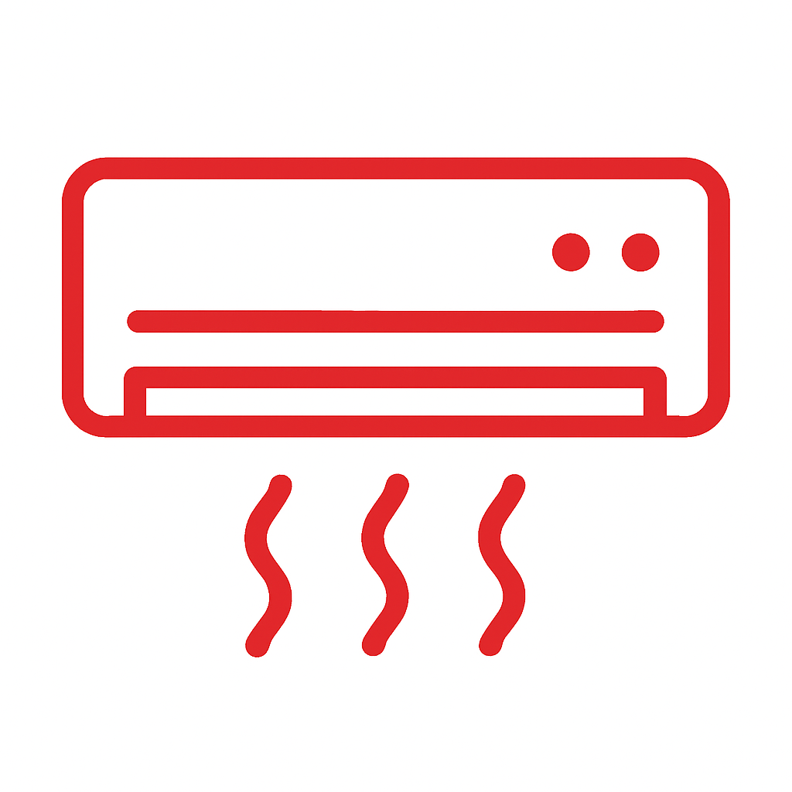
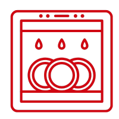

Fridge & Refrigerator Repair
Cooling problems, leaks, thermostat, defrost and compressor faults.
MyFixer is a mobile appliance repair service serving homes, offices, property managers and businesses across Centurion, Pretoria, Johannesburg and selected surrounding areas in Gauteng.
Our technicians travel to your home or business for diagnostics, repairs and selected installations. Where practical, repairs are completed on site during the service visit. We work on fridges, washing machines, TVs, ovens, dishwashers, coffee machines, air conditioning systems and more.
We focus on fast response times, transparent quotes, professional workmanship and practical repair solutions tailored to the appliance, model and fault.
Whether you're a homeowner, estate agent, property developer, body corporate or corporate client, we're here to help keep your appliances and systems running reliably.
Customer satisfaction is our priority. Every service is handled with care, professional communication and clear follow-through.
Get your appliance repaired or assessed without unnecessary hassle. Here’s our four-step process:
Call, WhatsApp or book online. We confirm the request and help you choose the appropriate service.
Where an on-site visit is suitable, our technician checks the appliance and provides a clear quote before repair work begins.
We carry out the approved repair or installation using appropriate tools, tested methods and suitable parts where required.
We test the appliance, tidy the work area and explain the result before completing the service.


MyFixer provides mobile appliance diagnostics, repairs and selected installation services for homes, offices, property managers and businesses in Centurion, Pretoria, Johannesburg and surrounding Gauteng areas. Where practical, our technicians come to you and complete the repair on site.

Cooling problems, leaks, thermostat, defrost and compressor faults.

Spin, drainage, water supply, leaks, electrical and control faults.
.png)
Screen, sound, power, connectivity and Smart TV faults.

Cooling, airflow, drainage, electrical, fan and control faults.

Leaks, drainage, heating and spray arm repairs.

Heating, elements, burners, ignition, doors and control faults..
Heating, turntable, door, electrical and control faults.

Heating, brewing, pump, grinder and water-flow faults.
We work with many leading household and commercial appliance brands, depending on the appliance, model, fault and parts availability.
Reliable service for homes, property managers and businesses across Gauteng.
Our team brings hands-on experience across major appliance brands and common residential repair needs.
We aim to respond quickly, communicate clearly and keep the process smooth from booking to completion.
We focus on professional repairs and practical solutions tailored to the appliance and fault.
Call, WhatsApp, or book online now. We’ll help you take the next appropriate step quickly.
Helpful answers about appliance diagnosis, repairs, service areas and booking with MyFixer.
Same-day service may be available depending on your area, the appliance issue and technician availability. Contact us early to check availability.
We provide mobile appliance repair services in Centurion, Pretoria and Johannesburg, as well as selected surrounding areas in Gauteng, subject to technician availability.
Yes. MyFixer provides mobile appliance diagnostics and repairs. Where the appliance, fault and working conditions make on-site repair practical, our technician can complete the repair at your home or business.
We work with many major appliance brands, including Defy, Samsung, LG, Bosch, Hisense, Whirlpool, AEG and others, depending on the appliance, model, fault and parts availability.
The technician checks the appliance and investigates the reported fault. Where an on-site diagnosis is suitable, we explain the problem and provide a quote before repair work begins.
Repair costs depend on the appliance, fault, parts required, labour and service requirements. A diagnosis may be needed before an accurate repair quote can be provided.
We can assess older appliances. Whether repair is practical depends on the appliance condition, fault, availability of suitable parts and the expected repair cost.
Yes. We provide appliance repair services for homeowners, landlords, estate agents, property managers, body corporates and businesses, subject to service-area availability.
The right choice depends on the appliance's age, condition, fault, repair cost, parts availability and expected remaining service life. We can explain the repair requirements so you can make an informed decision.
Yes. MyFixer is based in Centurion and provides mobile appliance repair services in Pretoria, Johannesburg and selected surrounding Gauteng areas, subject to technician availability.
Where a diagnosis is required, the appliance can be assessed and the repair requirements explained before repair work proceeds.
You can call or WhatsApp MyFixer, or use the online booking form on this page. Provide the appliance type, location and a description of the problem so we can understand your request.
We’re based in Centurion and provide mobile appliance repair services across Pretoria, Johannesburg and selected surrounding Gauteng areas.
Fast response • Same-day availability where possible • Quick help across Centurion, Pretoria & Johannesburg